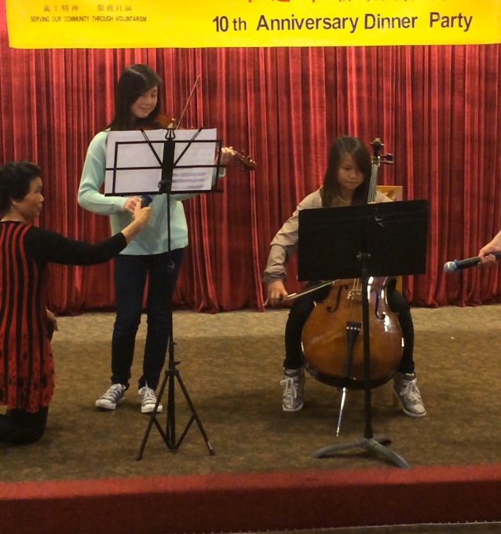

Ive started playing piano when I was 5 years old. It was just a hobby back then. But at age 13, I started to get piano lessons and in that same year I stopped due to my piano teacher's emigration. Now I self teach myself. Yiruma, the pianist was a major inspiration to me and he was the one that made me want to get piano lessons in the first place.
ALthough I really like to play classical music, I love to play OST songs from video games and animes.
Cello

I've been playing the cello for 6 years now. It all started when I decided to join my middle school (Westlake Middle School) orchestra class at age 12. I am currently in Oakland Technical High school's orchestra class.
Beats
This is my final project for my bridge class in Youth Radio (2014-2015)